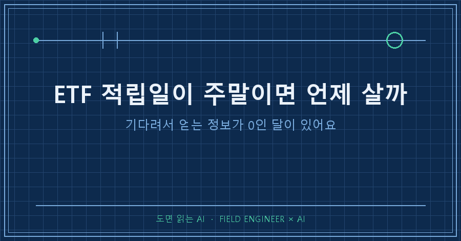
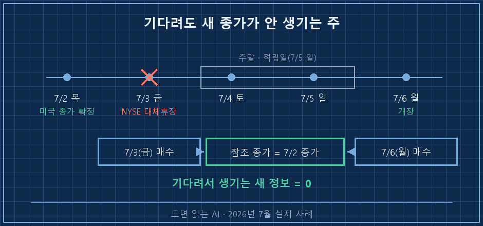
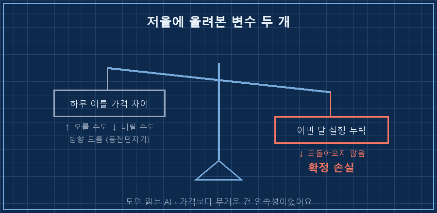
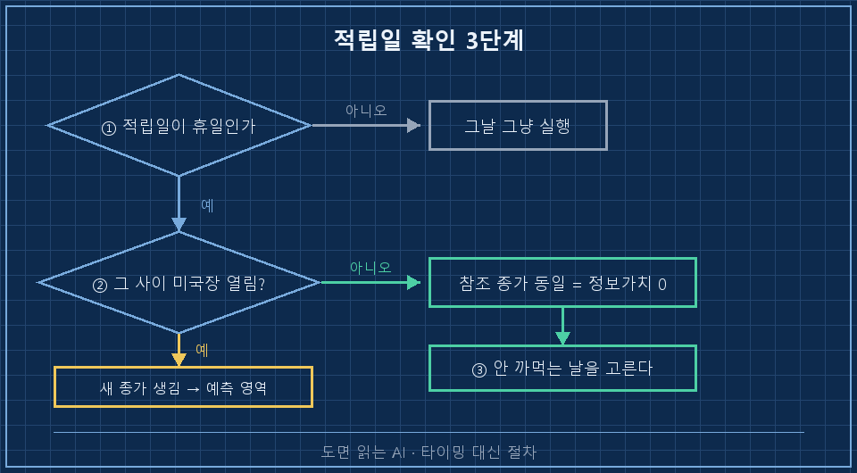

매달 5일에 적립하는데, 그 5일이 일요일이었어요.
금요일에 미리 살까, 월요일까지 기다릴까.
하루만 참으면 더 싸게 살 것 같은 그 기분, 다들 한 번쯤 겪으셨을 거예요.
결론부터 적어둘게요.
ETF 적립일 주말 문제는 "그 사이에 미국 장이 열리느냐" 하나로 거의 끝납니다. 안 열리면 금요일에 사든 월요일에 사든 참조하는 종가가 같아서, 기다려서 얻는 새 정보가 정보가치 0이에요.
2026년 7월에 제가 딱 그런 달을 만났습니다.
제 직업은 기계랑 신호가 규칙대로 움직이게 만드는 일이에요. 15년째 이걸로 먹고살고 있고요.
투자는 완전히 다른 얘깁니다. 전문가가 아니라, 매달 정해진 날에 국내 상장 S&P500 ETF를 정액으로 사는 월급쟁이 적립러예요.
그래서 이 글도 종목 얘기가 아니라 날짜 하나 정하는 데 뭘 확인했는지에 대한 기록입니다.
1. 하필 지수가 하루에 7.89% 빠진 다음날이었어요
7월 5일이 일요일이었으니 선택지는 둘이었어요. 금요일(7/3)에 미리 사거나, 월요일(7/6)까지 기다리거나.
게다가 바로 전날 국내 지수가 -7.89% 폭락한 직후라 마음이 영 뒤숭숭했습니다..
이럴 때 머리에 제일 먼저 떠오르는 건 "월요일이면 더 싸지 않을까"예요.
ETF 적립일 주말 문제가 성가신 게 딱 이 지점이에요. 날짜를 고르는 일인데 자꾸 가격 생각부터 나거든요..
그래서 제 투자 기록을 관리하는 AI한테 그대로 물었어요. 주말이라 그냥 오늘 사는 게 낫지 않겠냐고요.
돌아온 답이 예상 밖이었습니다.
싸다 비싸다 얘기가 아예 없었어요.
2. AI가 먼저 펼친 건 차트가 아니라 달력이었어요
첫 줄이 이거였습니다. 7월 4일 미국 독립기념일이 토요일이라, 뉴욕 증시가 금요일에 대체휴장을 한다고요.
[2026년 7월 적립 — 날짜 확인]
적립일 7월 5일 (일)
후보 7/3(금) vs 7/6(월)
그 사이 미국장 7/3 대체휴장 → 열리는 날 없음
참조 종가 양쪽 다 7/2(목) 종가국내 상장 S&P500 ETF가 따라가는 건 결국 미국 지수예요.
그런데 금요일 밤에 미국 장이 안 열리니, 금요일에 사든 월요일에 사든 그 사이에 새로 찍히는 지수 종가가 없습니다.
둘 다 목요일 종가를 보고 사는 셈이었어요.
저는 이 답을 그대로 믿지 않고 달력부터 열어서 대조했습니다.
AI가 날짜를 자신 있게 틀리는 걸 몇 번 봤거든요. 검산이 30초면 끝나는 건 그냥 검산하는 편이 마음 편해요.

3. 저울에 올려보니 변수는 두 개뿐이더라고요
여기서부터는 AI 답이 아니라 제 판단이었어요.
비교할 게 두 개였습니다.
하나는 하루 이틀 사이의 가격 차이. 이건 오를 수도 내릴 수도 있는 동전던지기예요.
다른 하나는 실행 자체를 놓치는 것. 저는 지난 4월에 매수일을 깜빡하고 그냥 넘긴 적이 있습니다..
앞의 것은 방향을 모르는 변수고, 뒤의 것은 확정 손실이에요.
건너뛴 달은 나중에 어떻게 해도 되돌아오지 않더라고요. 여러분도 적립 한 달 건너뛴 적, 혹시 있으신가요?

4. 그래서 금요일에 샀고, 이렇게 체결됐어요
기다려서 얻을 정보가 없다는 게 확인됐으니 그날 바로 실행했습니다.
[체결 결과 — 2026-07-03]
지시 지정가 28,860원 × 11주
체결 28,780원 × 12주 (지정가 대비 -80원/주)
이월 0원가격이 지정가보다 조금 내려와서, 남은 돈을 이월시키지 않고 한 주를 더 채웠어요.
잔돈 이월을 관리하는 것 자체가 매달 신경 쓸 변수가 되더라고요. 그래서 이월은 0으로 두는 걸 규칙으로 삼았습니다.
솔직하게 덧붙이면, 이 선택이 수익률을 얼마나 바꿨는지는 저도 몰라요.
하루 차이의 기대값 같은 건 계산할 능력이 없습니다. 다만 계산이 되는 게 하나 있었고, 그게 4월에 건너뛴 달이었어요.
5. 지금은 이 순서 세 개로 끝냅니다
ETF 적립일 주말 문제는 이제 저한테 고민이 아니라 절차예요. 2026년 8월 기준으로 쓰는 순서인데, 3분이면 끝납니다!
| 순서 | 확인할 것 | 판단 |
|---|---|---|
| 1 | 적립일이 휴일·주말인가 | 아니면 그날 그냥 실행 |
| 2 | 후보 날짜들 사이에 미국 장이 열리는가 | 휴장일은 달력·증권사 공지로 대조 |
| 3 | 안 열린다면 참조 종가가 같은가 | 같으면 기다림의 정보가치 0 |
그리고 마지막 판단 기준은 가격이 아니라 이거예요.
둘 중에 내가 확실히 안 까먹는 날은 어느 쪽인가.

이 글 쓰면서 저도 다시 확인한 것들
Q. 미국 장이 쉬면 국내 ETF 가격도 그대로인가요?
아니요, 조금씩 움직여요. 환율이랑 국내 수급이 있으니까요. 제가 말하는 건 가격이 고정된다는 뜻이 아니라, 방향을 알려줄 새 지수 정보가 안 생긴다는 뜻이에요. 지난번에 같은 계좌에서 환율 때문에 계좌가 마이너스로 보였던 얘기를 썼는데, 그 환율 변수는 미국이 쉬는 동안에도 계속 돌아갑니다.
Q. 미국 휴장일은 어디서 확인하나요?
저는 증권사 앱 공지와 달력으로 봅니다. AI한테 물어도 되는데, 답을 그대로 쓰지는 마세요. 날짜·요일은 AI가 제일 자신 있게 틀리는 영역이라, 저는 항상 달력으로 한 번 더 대조하고 넘어가요.
Q. 그럼 하루 이틀 타이밍은 아예 신경 안 쓰시나요?
신경은 쓰이죠. 다만 그 고민에 쓸 시간을 이제 3분짜리 확인 절차로 바꿨어요. 이건 어디까지나 제 기록이고 투자 권유가 아닙니다. 적립하는 상품도 방식도 사람마다 다르니, 순서만 참고하시면 좋겠어요.
적립일 고민의 정체는 대부분 '내일은 알 것 같은 기분'이었어요.
근데 달력을 펼쳐보니, 그 기분이 참조할 새 종가가 아예 없는 달도 있더라고요..
저는 그날 이후로 타이밍을 고르는 대신 안 까먹을 날을 고릅니다.
makefield.ai에는 이렇게 매달 반복되는 판단을 절차로 굳혀둔 페이지가 하나 있어요.
---
현장 엔지니어를 위한 AI 도입·자동화 문의: makefield.ai
태그: #ETF적립일주말 #적립식투자 #미국증시휴장일 #ETF매수타이밍 #S&P500ETF #적립식매수일 #독립기념일휴장 #월급쟁이투자 #AI투자질문 #AI에게물어보기 #투자기록 #적립연속성 #AI활용법 #현장엔지니어 #도면읽는AI